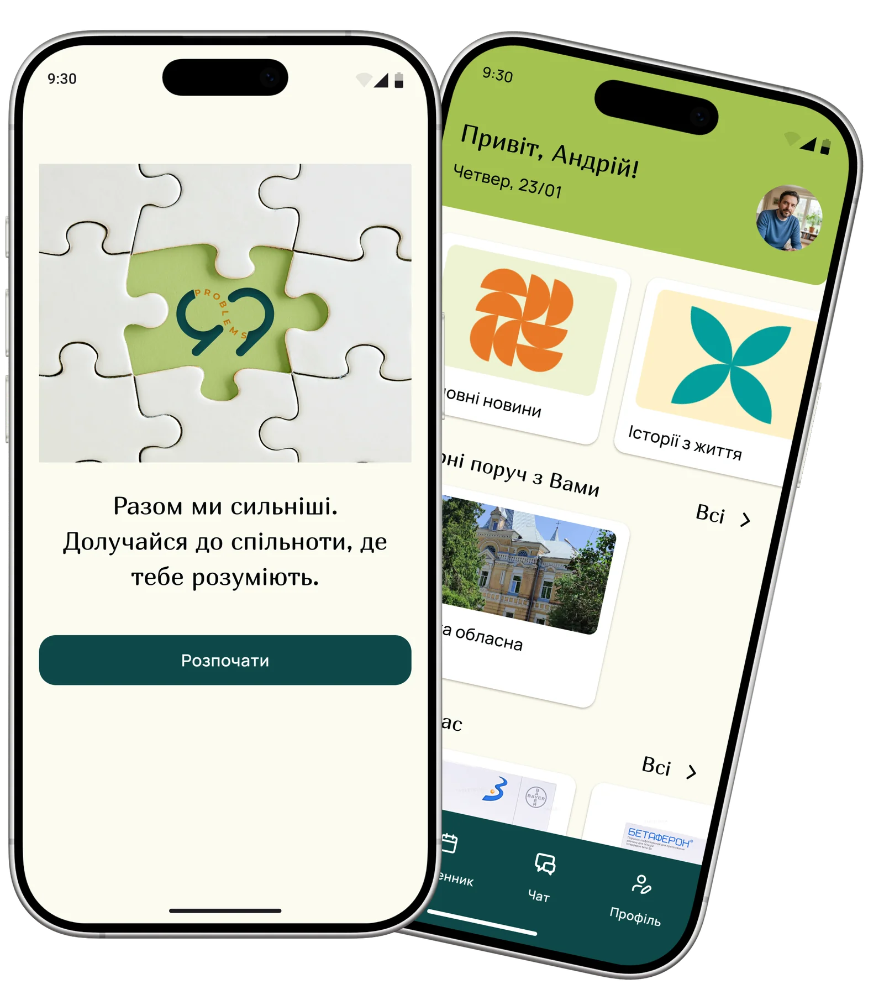
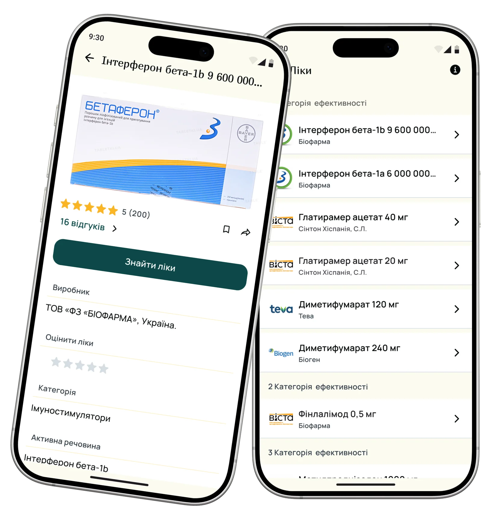
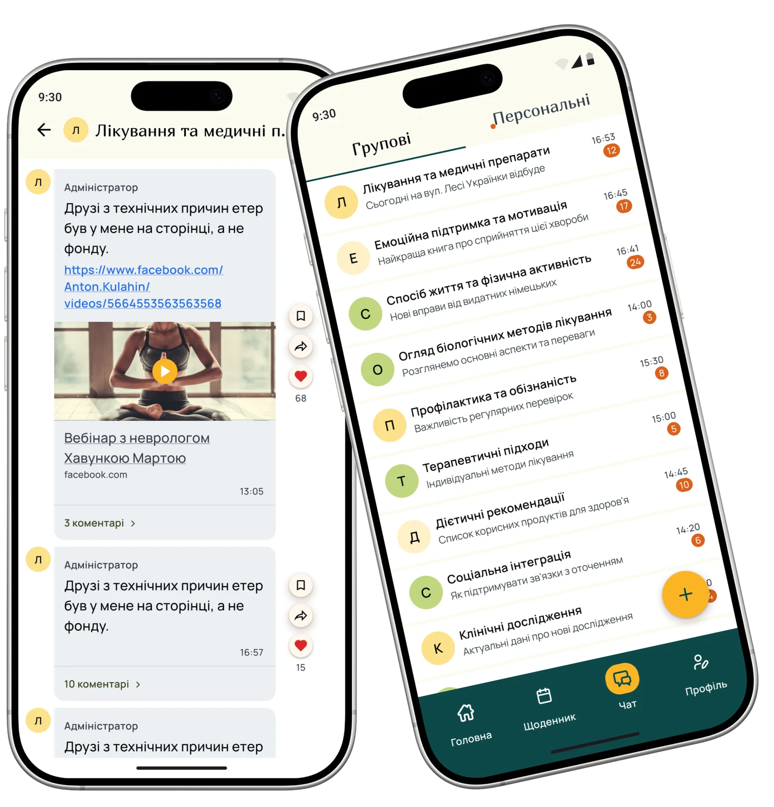
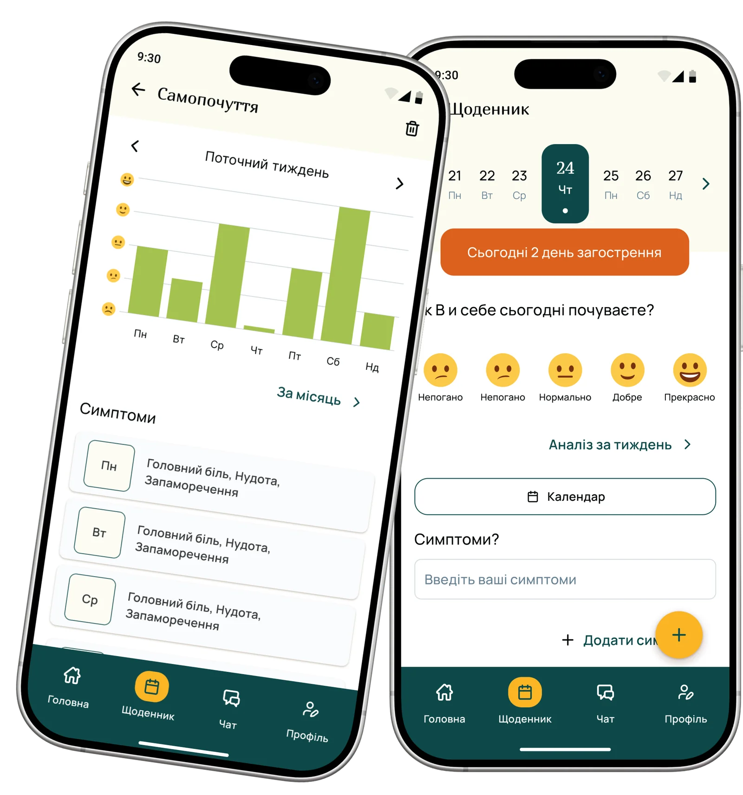

A mobile app for people with MS in Ukraine. Medications from the state program, hospitals on a map, community chats, and a health diary. Nothing like this existed in one place before.

99problems.org.ua supports people with multiple sclerosis. The foundation kept receiving the same requests about medications, hospitals, and life with MS. The answers existed — but the team had to provide them over and over again.
Useful information and community support already existed — but were scattered across different platforms. Users had to search for answers in multiple channels instead of one convenient place.
Medication requests kept repeating.
Even though the website existed, people kept coming in with the same questions about medications and hospitals.
The community was spread across different channels.
People communicated via Viber, Facebook, and Instagram, but had no single space for support, sharing experience, and finding information.
Disease progression wasn't tracked systematically.
Symptoms, relapses, and medication intake often ended up in paper notebooks — or weren't recorded at all, even though this information is crucial for people with MS.
I designed and distributed a mixed-methods survey through the foundation's networks. In parallel, I analyzed existing MS communities on Viber, Instagram, and Facebook, mapping recurring topics across hundreds of posts.
90% of respondents were people living with MS themselves. 34% had been diagnosed more than 10 years ago. Their answers were consistent and clear.
Turned one of the most frequent user requests into a clear scenario. Users no longer need to separately search for medications, information about them, and hospitals where they can get them. Everything is united in one flow: from choosing a medication to finding the nearest hospital via a map or city search.
I also added the ability to leave medication reviews — helping people with MS share their own treatment experience, while giving the foundation data to support patient needs at the level of state programs.


Brought communication and support into one space. Instead of switching between Viber, Facebook, and Instagram, users can find information, support, and others' experiences in the app.
I divided communication into general chats and interest groups. General chats provide quick access to community support, while groups unite people around specific needs: pregnancy with MS, treatment, physical activity, or psychological support. Users can create groups themselves and invite others.
I turned daily entries into a health management tool. Users can record wellbeing, symptoms, medication intake, and relapses in one place — and the system automatically builds a history of changes over time.
The collected data becomes a visual health history — helping users notice patterns between symptoms, treatment, and wellbeing. Charts simplify preparation for consultations, and appointment booking helps move quickly from observation to action.

Designed and conducted a quantitative survey among 811 respondents. Analyzed MS communities on Viber, Facebook, and Instagram, identifying recurring needs and behavioral patterns that became the foundation of the product's structure and interaction scenarios.
Defined the information architecture, user flows, and full app interface. Developed the design system, component library, design tokens, and high-fidelity mockups for all key scenarios.
Worked in a cross-functional team alongside a Product Manager, Business Analyst, Front-end and Back-end developers. Participated in requirements discussions, solution prioritization, and design handoff.
When 811 people give you the same answer, your job is to stop guessing and start designing.
When hundreds of people point to the same problems, product priorities become obvious.
Legal and medical constraints shape the product just as much as user needs do.
For people with chronic conditions, support, trust, and community can be just as important as the tools themselves.